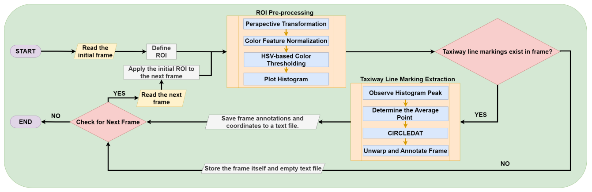
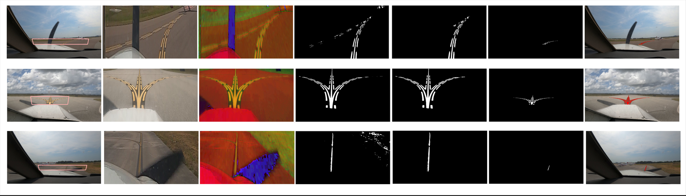

Highlights
No manual pixel labeling
Replaces slow, costly, crowd-sourced annotation with one region of interest per video.
Perspective- and weather-agnostic
Works across different camera angles and both sunny and cloudy conditions.
98.45%
Detection rate against a hand-verified ground truth set.
60,249 frames
Labeled from the AssistTaxi dataset using this approach.
Method

- Draw a trapezoidal region of interest on the first frame.
- Warp the region into a top-down view.
- Normalize and threshold the color channels to isolate candidate line marking pixels.
- Scan a histogram of the mask to locate the strongest column of pixels.
- Trace the connected line marking pixels with CIRCLEDAT.
- Unwarp the result and mark the pixels on the original frame.
The same region of interest is reused for every later frame in the video. No model training involved.
Results
Qualitative

Detection rate
ALINA vs. CDLEM, evaluated against a 120-frame context-based edge map (CBEM) ground truth set.
| Algorithm | Detection Rate (%) | Processing Time (ms) |
|---|---|---|
| CDLEM | 91.14 | 120.35 |
| ALINA | 98.45 | 50.09 |
CIRCLEDAT vs. sliding window
Comparing CIRCLEDAT against a sliding window search for isolating line marking pixels.
| Algorithm | Time Complexity | Processing Time (ms) |
|---|---|---|
| Sliding Window | O(m × n) | 10.90 |
| CIRCLEDAT | O(k) | 3.33 |
Processing time breakdown
Average time per frame, by pipeline stage. Measured on CPU.
| Process | Time (ms) |
|---|---|
| Perspective Transformation | 4.41 |
| Color Feature Normalization | 5.91 |
| HSV-based Color Thresholding | 1.05 |
| Histogram Analysis | 28.71 |
| CIRCLEDAT | 3.33 |
| Projection Remapping | 6.68 |
| Total | 50.09 |
Citation
@InProceedings{Khan_2024_CVPR,
author = {Khan, Mohammed Abdul Hafeez and Ganeriwala, Parth and Bhattacharyya, Siddhartha and Neogi, Natasha and Muthalagu, Raja},
title = {ALINA: Advanced Line Identification and Notation Algorithm},
booktitle = {Proceedings of the IEEE/CVF Conference on Computer Vision and Pattern Recognition (CVPR) Workshops},
month = {June},
year = {2024},
pages = {7293-7302}
}